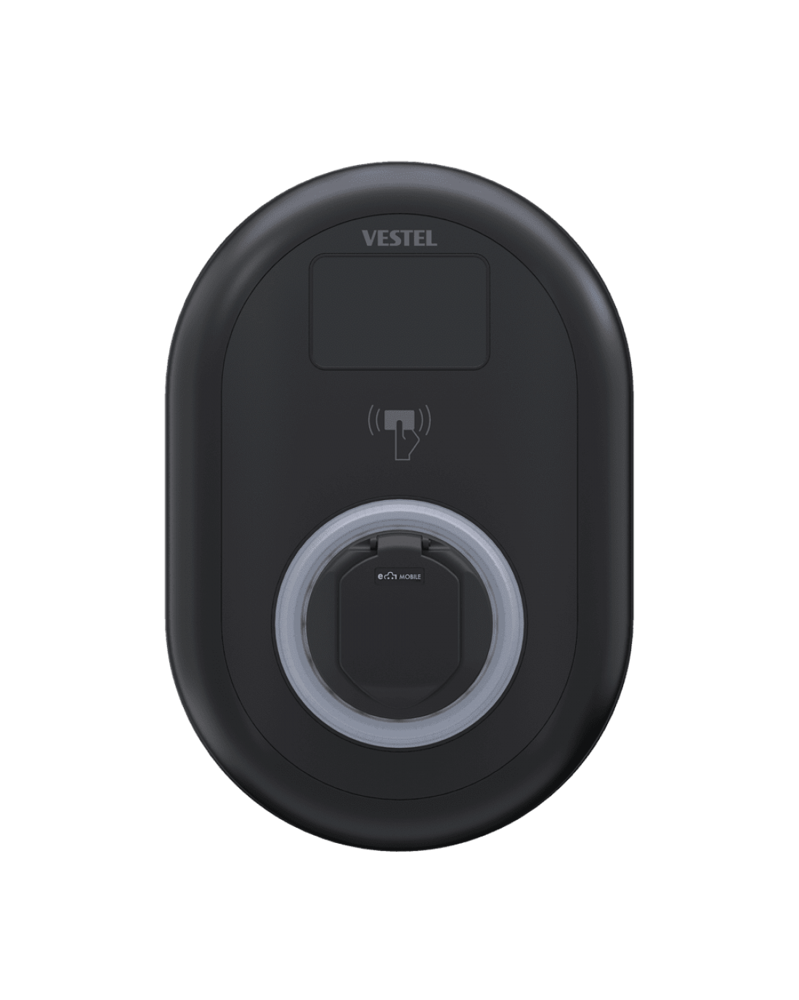

Setup guidance
Clear, step-by-step guidance to help you get your charger online and accessible.
EV Revival gives Vestel charger owners practical help and web-based app access in one place. Use it as a simple alternative app experience for setup guidance, everyday charging controls, schedules, and RFID on compatible chargers.
Connectivity depends on your charger, Wi-Fi, and setup. EV Revival does not control network performance.

Vestel alternative app access is available through your browser, and you can use Help with my Vestel charger for setup, How to schedule a Vestel charger, and fault guidance.
New customers can start with a 14-day free trial. After the trial, paid access is required for premium features.
EV Revival started as a personal project after seeing how difficult it could be for Vestel charger owners to reconnect chargers, manage schedules, and make sense of faults. Built from real-world experience as both a Vestel user and installer, it was created to offer a simpler, more practical self-service experience for compatible chargers.
A simple, self-service platform with guidance based on real-world charger use.
Clear, step-by-step guidance to help you get your charger online and accessible.
Understand how to connect your charger and what to check if it appears offline.
Plain English descriptions of red, yellow, blue, or no-light states.
Clear information on trials, subscriptions, and what happens if billing becomes inactive.
Privacy, cookies, and terms written in practical, easy-to-understand language.
Use EV Revival in your browser on desktop or mobile and add it to your home screen.
EV Revival is a self-service platform. Outcomes depend on your charger, setup, and network.